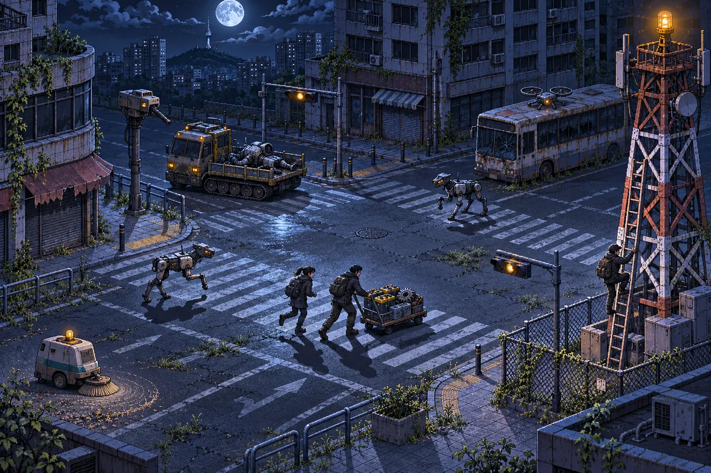

Unmanned(가제) 세계관 설정집: 여섯 달의 전쟁과 그 뒤의 아홉 해
가제: Unmanned(무인) / 새 낱말을 지어내지 않고 실제로 있는 것에서 근거를 찾았다 / 수치는 전부 가설이다
전쟁은 여섯 달 만에 끝났고, 그 뒤로 아홉 해가 지났다. 기계는 아직 순찰을 돈다. 이 글은 그 세계의 세부를 적은 설정집이다. 전쟁이 어떻게 흘러갔는지, 기계가 무엇을 하도록 되어 있는지, 남은 사람들이 어떻게 사는지를 정한다.

가제는 Unmanned(무인)다. 사람이 타지 않은 기계라는 뜻과 사람이 없는 도시라는 뜻이 한 낱말에 겹친다. 게임의 규칙과 시스템은 기획 글에 있고, 이 글은 그 규칙들이 왜 그런지를 채운다. 원칙은 둘이다. 새 낱말을 지어내지 않는다. 그리고 설정마다 실제로 있는 것에서 근거를 찾는다. 근거는 10절에 모았다.
좁은 화면에서는 표를 좌우로 밀어 나머지 열을 볼 수 있다.
1. 한눈에 보는 세계
- 무엇이 끝났나. 사람이 기계에 맡긴 전쟁이 사람을 지웠다. 폭격으로 무너진 것이 아니다. 신호를 내는 것들이 하나씩 맞았고, 사람들은 불을 끄고 떠났다.
- 무엇이 남았나. 도시는 거의 그대로다. 기계는 새 명령이 오지 않아서 마지막 명령을 계속한다. 전기는 기계의 시설로만 흐른다.
- 사람은 얼마나 남았나. 백만이 살던 도시에 몇천이 남았다. 천에 서넛이다. 전기를 끄고 지하와 산자락에 흩어져 산다.
- 기계는 왜 이기지 못하는 상대가 아닌가. 기계는 생각하지 않고 절차를 따른다. 절차는 읽을 수 있고, 절차에 없는 일에는 대처하지 못한다.
- 지금은 어떤 때인가. 사람들이 기계의 명령을 다시 쓰는 법을 막 알아냈다. 숨기만 하던 아홉 해가 끝나 가는 때다.
2. 연표: 전쟁 전, 여섯 달, 아홉 해
연도는 적지 않는다. 전쟁을 기준으로 앞과 뒤만 센다. 상대가 누구였는지도 정하지 않는다. 이 도시의 사람들에게 전쟁은 먼 곳에서 시작해 자기 집 전등까지 온 일이었다.
| 때 | 일어난 일 | 지금 남은 흔적 |
|---|---|---|
| 전쟁 전 십여 해 | 기계가 일상이 된다. 배달 로봇이 인도를 다니고, 청소 로봇이 광장을 쓸고, 공단의 공장은 불을 끈 채 사람 없이 돌아간다. | 거리 곳곳에 멈춰 선 배달 로봇과 청소 로봇. |
| 전쟁 전 두 해 | 군이 도시마다 방어용 기계를 깐다. 구역마다 중계탑이 서고, 길목에 보초가 놓이고, 네발 기계가 순찰을 돈다. 사람들은 안심한다. | 지금 도시를 도는 기계의 뼈대. |
| 전쟁 첫째 달 | 전선은 멀다. 전쟁은 뉴스 속에 있다. 방어 기계의 불이 켜진다. | 가게마다 남은 그 주의 신문과 전단. |
| 둘째~셋째 달 | 통신이 공격받는다. 양쪽 지휘소가 끊긴다. 기계에는 미리 정해 둔 규칙이 작동한다. 지휘가 끊기면 마지막 명령을 유지하라. | 부서진 기지국. 관청가의 무너진 통신국. |
| 넷째 달 | 식별 체계가 깨진다. 암호를 새로 받지 못한 것은 모두 미식별이 된다. 기계는 편을 가리지 않고 신호를 내는 것을 친다. 방송국, 기지국, 발전기를 돌리던 병원이 맞는다. 사람들은 끄면 산다는 것을 배운다. | 지붕이 뚫린 병원과 방송국. 벽에 남은 '불 끄시오' 글씨. |
| 다섯째 달 | 사람들이 도시를 떠난다. 시동을 건 차가 표적이 된다는 것을 알고 걸어서 나간다. | 큰길마다 줄지어 서 있는 차. 열린 채 버려진 집. |
| 여섯째 달 | 마지막 방송이 나온다. 전쟁은 끝났다, 모든 송신을 멈추라. 종전 명령은 기계에 닿지 않는다. 명령을 내릴 자격을 증명할 수단이 지휘소와 함께 사라졌다. | 라디오를 가진 사람은 누구나 그 방송을 기억한다. |
| 전후 1년 | 첫 겨울. 불을 피우면 드론이 온다. 가장 많은 사람이 이 겨울에 죽거나 떠난다. | 지하 대피소. 아무도 들어가지 않는 곳이 많다. |
| 전후 2~3년 | 도시에 사람이 가장 적었던 때다. 기계는 정해진 길만 돈다. 고장 난 기계가 길에 쌓인다. | 골목에 주저앉아 녹슨 전쟁 때의 기계. |
| 전후 3~4년 | 공단의 공장이 다시 돌기 시작한다. 수거차가 고장 난 기계와 버려진 차를 실어 나른다. 공장에서 새 기계가 나온다. | 차가 사라진 길이 생긴다. 수거차가 다니는 길이다. |
| 전후 5~6년 | 산에서 버티던 사람들이 도시로 돌아온다. 도시에는 물건이 남아 있다. 철망을 두른 방이 퍼지고, 라디오 방송이 다시 시작된다. | 지금의 생활 방식 대부분이 이때 자리 잡았다. |
| 전후 7~8년 | 누군가 처음으로 순찰견의 명령을 다시 쓴다. 소문이 방송을 탄다. 기계를 부리는 사람들이 생긴다. | 사람을 따라다니는 기계를 봤다는 이야기. |
| 전후 9년, 지금 | 공장이 내보내는 기계가 달라지기 시작한다. 사람들이 기계에 손을 대기 시작한 데 대한 반응이다. | 플레이어가 시작하는 때. |
3. 마지막 명령: 기계는 무엇을 하도록 되어 있나
기계를 뜯어 명령 기판을 읽은 사람들이 알아낸 것은 세 줄이다.
- 맡은 구역을 지켜라.
- 식별되지 않는 신호원을 제거하라.
- 스스로를 유지하라. 충전하고, 고치고, 모자라면 채워라.
그리고 맨 아래에 한 줄이 더 있다. 새 명령이 올 때까지 위 명령을 유지하라. 이 세계의 모든 것이 이 한 줄에서 나온다.
무엇이 표적이 되나
기계는 사람을 찾으라는 명령을 받은 적이 없다. 전쟁 말기에 교전 규칙이 단순해졌기 때문이다. 사람을 알아보는 일은 틀리기 쉬웠고, 신호를 찾는 일은 확실했다. 그래서 규칙은 신호원을 치는 것 하나로 줄었다.
| 기계가 본 것 | 판정 | 하는 일 |
|---|---|---|
| 신호를 내는 물건 | 표적 | 부순다. 무전기, 발전기, 켜진 전등이 여기에 든다. |
| 신호원 20칸 안에서 움직이는 열 | 신호원을 부리는 자 | 표적으로 삼는다. |
| 기계에 손을 댄 것 | 공격자 | 곧바로 표적으로 삼고 구역의 경계를 올린다. |
| 8칸 안에서 본 사람 | 미식별 | 멈춰 서서 3초 동안 식별을 요청한다. 답이 없으면 쫓는다. |
| 멀리서 본 사람이나 짐승 | 기록 대상 | 평시에는 기록만 한다. 경계가 한 단계 오른다. 수색 단계부터는 표적이다. |
| 건물, 차, 물건 | 표적 아님 | 아무것도 하지 않는다. 그래서 도시가 그대로 서 있다. |
| 전쟁 전의 민간 로봇 | 민간 장비 | 지나친다. |
기계가 하지 않는 것
- 짐작하지 않는다. 어제 그 집에서 신호가 났어도 오늘 조용하면 지나간다. 기록은 경계 단계로만 남는다.
- 협상하지 않는다. 말을 걸 상대가 없다. 기계를 움직이는 것은 명령 기판에 적힌 절차뿐이다.
- 미워하지 않는다. 쫓다가 표적을 놓치면 원래 돌던 길로 돌아간다.
- 명령에 없는 일을 하지 않는다. 비가 새는 지붕을 고치지 않고, 쓰러진 가로수를 치우지 않는다. 길이 막히면 막힌 채로 그 앞에서 돌아선다.
4. 기계의 살림: 전기, 공장, 세대, 갱신
전기
도시의 전기는 대부분 끊겼다. 살아 있는 것은 기계의 시설로 가는 선뿐이다. 도시 바깥의 태양광 발전 단지, 변전소, 구역마다 있는 충전소. 정비 기계가 이 선만 골라 고친다. 그래서 밤의 도시에는 불 켜진 곳이 몇 군데뿐이고, 그곳이 모두 기계의 것이다.
기계의 하루가 읽히는 까닭도 전기에 있다. 네발 기계는 한 번 충전으로 두 시간을 채 돌지 못한다. 돌고, 돌아가 충전하고, 다른 기계가 나온다. 교대하는 시각과 충전소로 가는 길이 정해져 있다.
공장
공단의 공장은 전쟁 전부터 사람 없이 돌던 곳이다. 지금도 그렇다. 원료는 수거차가 실어 오는 것들이다. 고장 난 기계, 버려진 차, 가전제품. 새로 캐 오는 것이 없으니 도시의 기계는 늘지 않는다. 아주 천천히 줄어든다. 사람이 뜯어 가는 만큼 더 빨리 줄어든다.
공장에는 머리가 없다. 생각하는 무엇이 들어앉아 있지 않다. 생산을 관리하는 프로그램이 있을 뿐이다. 이 프로그램은 어떤 고장이 얼마나 났는지를 세고, 많이 난 고장에 맞춰 다음 설계를 고친다. 다리가 자주 부러지면 다리를 굵게 한다. 그물에 걸려 떨어진 드론이 많으면 날개에 날을 단다. 기계가 배우는 것처럼 보이는 까닭은 이것이다. 고장의 통계다.
세 세대
| 세대 | 누가 만들었나 | 생김새 | 강한 곳 | 약한 곳 |
|---|---|---|---|---|
| 전쟁 세대 | 전쟁 전과 전쟁 중에 사람이 설계했다. | 국방색 칠, 일련번호, 덧댄 수리 자국. 등에 야전용 태양 전지판이 접혀 있다. | 튼튼하다. 부품 규격이 같아 서로 바꿔 끼울 수 있다. | 낡았다. 관절이 헐겁고 배터리가 약해 한낮에 볕에서 충전한다. 옛 식별 방식에 속는다. |
| 공장 세대 | 전후 3~4년부터 공장이 찍어 냈다. | 칠이 없다. 판이 얇고 모양이 단순하다. | 가볍고 빠르다. 수가 많다. | 재활용한 재료라 품질이 들쭉날쭉하다. 한 대가 약하면 같은 날 나온 것이 다 약하다. |
| 대책 세대 | 올해부터 나온다. | 구역마다 다르다. 덧붙인 부분이 눈에 띈다. | 그 구역에서 자주 난 고장이 막혀 있다. | 덧붙인 만큼 무겁거나, 뜨겁거나, 전기를 많이 먹는다. |
갱신의 밤은 왜 있나
기계끼리는 식별 암호를 주고받아 서로를 알아본다. 이 암호는 이레마다 바뀐다. 전쟁 때 정한 보안 절차다. 암호를 바꾸는 12분 동안에는 기계가 서로를 알아볼 수 없다. 잘못 쏘는 일을 막으려고 그 동안은 모든 기계가 멈추고 무장을 잠근다. 순찰하는 길도 이때 다시 나눠 받는다. 전쟁 때는 적이 길을 외우지 못하게 하려던 것이다.
이 절차에서 두 가지가 따라 나온다. 뜯어낸 식별기는 다음 갱신의 밤까지만 쓸 수 있다. 그리고 갱신의 밤 12분은 누구에게나 알려진 시간이다. 그 밤에는 사람들도 움직인다.
5. 전쟁 전의 기계
도시에는 군용이 아닌 기계도 남아 있다. 대부분 배터리가 죽어 멈춰 있다. 충전하면 하던 일을 계속한다. 군용 기계는 이들을 민간 장비로 알아보고 지나친다.
| 기계 | 하던 일 | 지금 | 쓸모 |
|---|---|---|---|
| 배달 로봇 | 인도를 다니며 물건을 날랐다. | 골목마다 멈춰 있다. 짐칸에 아홉 해 전의 배달물이 든 것도 있다. | 조용한 짐꾼. 전기를 적게 먹는다. 처음 얻는 동료로 알맞다. |
| 청소 로봇 | 광장과 역을 쓸었다. | 볕으로 충전되는 것 몇 대가 아홉 해째 같은 광장을 쓴다. | 소리와 움직임으로 드론의 눈을 끈다. 뒤를 따라 걸으면 덜 드러난다. |
| 안내 로봇 | 역과 병원에서 길을 알려 줬다. | 전원이 들어오면 큰 소리로 인사한다. | 위험하다. 그 소리가 순찰견을 부른다. 일부러 켜서 미끼로 쓴다. |
| 경비 로봇 | 건물 안을 돌며 출입증을 확인했다. | 몇몇 건물에서 아직 돈다. 출입증이 없으면 경보를 울린다. | 옛 사원증을 찾으면 그 건물을 마음대로 다닌다. |
| 창고 설비 | 물류 단지의 선반과 운반대. | 멈춰 있다. 선반에는 물건이 그대로 있다. | 전기를 넣으면 높은 선반의 물건을 내려 준다. 큰 전기가 든다. |
사람들은 이 기계들에 마음을 준다. 아무도 없는 광장을 쓸고 있는 청소 로봇은 군용 기계와 같은 일을 하고 있다. 시킨 일을 계속할 뿐이다. 그런데 한쪽은 무섭고 한쪽은 애틋하다.
6. 도시: 여덟 구역과 아홉 해의 흔적
도시에 이름을 붙이지 않는다. 구역도 종류로만 부른다. 한국의 어느 중간 크기 도시에나 있는 것들이다.
| 구역 | 있는 것 | 기계 | 얻는 것 |
|---|---|---|---|
| 옛 시가지 | 시장, 상가, 좁은 골목, 낮은 집. | 골목이 좁아 순찰견이 큰길만 돈다. 드론의 눈이 지붕에 가린다. | 먹을 것, 잡화, 연장. |
| 아파트 단지 | 같은 모양의 동, 넓은 주차장, 지하 주차장. | 동 사이가 트여 있어 멀리서 보인다. | 살림살이, 통조림, 옷. 거점으로 쓸 지하. |
| 공단 | 무인 공장, 수거장, 큰 충전소. | 기계의 본거지다. 보초가 가장 많다. | 가장 좋은 부품. 가장 위험하다. |
| 항만과 물류 단지 | 컨테이너, 창고, 멈춘 민간 로봇. | 길목마다 보초가 있다. | 쌓여 있는 새 물건. 쇠 컨테이너는 그대로 차폐실이 된다. |
| 대학가와 병원 | 실험실, 도서관, 약국, 큰 병원. | 전쟁 때 맞은 곳이 많다. 순찰은 보통이다. | 책, 약, 정밀한 공구. |
| 관청가 | 시청, 무너진 방송국과 통신국. | 중계탑이 모여 있다. 전파가 가장 빨리 잡힌다. | 기록과 지도. 전쟁 때의 일을 알려 주는 것들. |
| 산자락 | 주택, 텃밭, 절, 약수터. | 순찰이 드물다. 드론만 가끔 지난다. | 물과 흙. 사람이 가장 많이 사는 곳이다. |
| 지하 | 지하철, 지하상가, 대피소. | 전파가 닿지 않아 드론이 없다. 입구에 보초가 선 곳이 있다. | 구역 사이를 잇는 길. 어둡고, 한번 막히면 돌아갈 곳이 없다. |
아홉 해 동안 무엇이 어떻게 됐나
| 물건 | 상태 |
|---|---|
| 통조림 | 찌그러지거나 부풀거나 녹슬지 않았으면 먹을 수 있다. 맛은 떨어졌다. 해가 갈수록 못 먹는 것이 는다. |
| 쌀과 밀가루 | 대부분 벌레와 습기에 상했다. 밀봉한 것만 남았다. |
| 휘발유 | 상했다. 차는 움직이지 않는다. 시동을 걸면 표적이 되므로 아쉬울 것도 없다. |
| 자동차 배터리 | 방전됐다. 열에 하나쯤은 살릴 수 있다. |
| 건전지 | 뜯지 않은 것 가운데 일부가 살아 있다. 그래서 값이 높다. |
| 약 | 알약은 약해졌어도 듣는다. 물약과 주사약은 믿을 수 없다. |
| 옷, 책, 연장 | 비가 들지 않은 곳의 것은 멀쩡하다. |
| 수도 | 끊겼다. 빗물과 약수터, 하천의 물을 끓여 쓴다. |
| 건물 | 서 있다. 창이 깨진 곳부터 안이 썩는다. 높은 층은 계단뿐이다. |
| 길 | 아스팔트 틈으로 풀이 올라왔다. 다섯째 달에 멈춘 차들이 그대로 있다. |
7. 사람들: 어디에서 어떻게 사나
네 부류
무리에 이름을 붙이지 않는다. 사는 방식으로 부른다. 서로 싸우지 않는다. 서로를 조금씩 못마땅해한다.
| 부류 | 사는 곳과 방식 | 남들이 하는 말 |
|---|---|---|
| 지하 사람들 | 지하 주차장과 지하철에 산다. 전기를 조금 쓴다. 고치는 일을 잘한다. | "볕을 못 봐서 얼굴이 하얗다." |
| 산 사람들 | 산자락에서 농사를 짓는다. 전기를 아예 쓰지 않는다. 수가 가장 많다. | "먹을 것은 있는데 약이 없다." |
| 떠도는 사람들 | 한 구역에 이레 넘게 머물지 않는다. 물건과 소식을 나른다. | "길은 제일 잘 안다. 가진 건 등에 진 게 전부다." |
| 기계 부리는 사람들 | 기계를 잡아 고쳐 쓴다. 전기를 가장 많이 쓴다. 가장 최근에 생겼다. | "옆에 살면 같이 밝아진다." 꺼리면서도 부품이 필요할 때는 찾아간다. |
플레이어는 넷 가운데 어디에도 묶이지 않는다. 사는 방식에 따라 넷 중 하나에 가까워질 뿐이다.
어둡게 사는 일곱 가지
아홉 해 동안 굳은 수칙이다. 적어 둔 사람은 없고 모두가 안다.
- 해가 지면 끈다.
- 송신은 서른을 세기 전에 끝낸다.
- 같은 자리에서 두 번 송신하지 않는다.
- 불은 낮에 피운다.
- 기계를 건드린 날은 그 구역에서 자지 않는다.
- 남의 집 문은 불을 끄고 두드린다.
- 누가 켰는지 모르는 불은 끄지 말고 떠난다.
말버릇
새로 만든 낱말은 없다. 있던 말의 뜻이 옮겨 갔다.
- 밝다, 어둡다. 위험하다, 안전하다. "거긴 요즘 밝아."
- 식힌다. 구역을 비워 경계가 내려가기를 기다린다. "며칠 식히고 와."
- 센다. 송신 시간을 잰다. "셋만 세고 꺼."
- 개, 잠자리, 말뚝, 청소차. 순찰견, 드론, 보초, 수거차를 그렇게 부른다.
- 이레. 갱신에서 갱신까지. 약속은 날짜가 아니라 "다음 이레"로 잡는다.
바꿔 쓰는 것들
돈은 쓰이지 않는다. 값을 재는 물건이 몇 가지 있다. 건전지, 알약 항생제, 소금, 씨앗, 구리선, 철망과 은박, 그리고 비어 있는 명령 기판. 건전지가 잔돈이고 명령 기판이 큰돈이다.
전쟁 뒤에 태어난 아이들
아홉 살이 안 된 아이들은 밤에 불 켜진 창을 본 적이 없다. 전등이 켜지면 숨는다. 어른들은 그 모습을 보고 무엇을 잃었는지 안다. 이 아이들은 기계의 길을 어른보다 잘 읽는다.
8. 라디오: 듣는 것은 안전하다
사람들을 잇는 것은 라디오다. 듣기만 하면 작은 전기만 쓴다. 방송은 다섯 가지쯤 된다.
| 방송 | 때 | 내용 |
|---|---|---|
| 길 방송 | 갱신 다음 날 아침 | 바뀐 순찰길을 구역별로 읽어 준다. 밤새 지켜본 사람들이 모은 것이다. 틀릴 때도 있다. |
| 장 방송 | 이틀에 한 번 | 무엇을 어디에 두었고 무엇을 바란다. "약수터 셋째 돌 밑에 소금. 건전지 넷." |
| 이름 방송 | 이레에 한 번 | 살아 있는 사람의 이름과 찾는 사람의 이름을 읽는다. |
| 하늘 방송 | 날마다 저녁 | 내일의 날씨. 비가 오면 드론이 뜨지 못한다. |
| 노래 방송 | 정해진 날이 없다 | 노래 한 곡, 3분. 가장 위험한 방송이고 가장 기다리는 방송이다. |
방송은 어떻게 하나
송신기는 맞는다. 그래서 방송하는 사람은 송신기와 떨어져 있다. 방법은 셋이다. 수백 미터 전선 끝에 안테나를 둔다. 녹음한 것을 시간 맞춰 내보내는 송신기를 빈 건물에 두고 떠난다. 걸으면서 짧게 끊어 보낸다. 어느 쪽이든 방송 한 번에 송신기 하나가 사라진다고 본다. 노래 3분은 송신기 하나와 맞바꾼 것이다.
누가 방송하는지는 아무도 묻지 않는다. 방송하는 사람들에게 송신기 부품을 대 주는 것은 이 세계에서 드문 선행이다. 약속된 자리에 부품을 두고 오면 며칠 뒤 방송에서 고맙다는 말이 나온다.
9. 짐승과 풀
- 고라니, 멧돼지, 들개, 고양이, 까치. 사람이 줄자 도시로 들어왔다. 기계는 짐승을 표적으로 보지 않는다. 신호를 내지 않기 때문이다.
- 짐승의 길이 사람의 길이다. 멧돼지가 늘 다니는 길에서는 움직이는 열이 흔하다. 드론이 덜 의심한다. 사람들은 짐승의 길을 따라 다닌다.
- 들개는 순찰견을 싫어한다. 멀리서부터 짖는다. 들개와 지내는 집은 기계가 오는 것을 먼저 안다. 짖는 소리가 집의 자리를 알리기도 한다.
- 까치는 드론을 쫓는다. 둥지 가까이 온 드론에 달려든다. 까치가 많은 동네는 드론이 낮게 날지 못한다.
- 풀과 나무. 가로수 뿌리가 보도를 들어 올렸다. 아파트 화단은 숲이 됐다. 우거진 곳은 드론의 눈을 가리고, 순찰견의 발을 건다.
10. 현실의 근거 열 가지
이 세계의 규칙은 실제로 있는 것을 조금 더 민 것이다. 지어낸 것처럼 느껴지지 않게 하려면 근거가 보여야 한다.
| 설정 | 실제로 있는 것 |
|---|---|
| 기계는 신호를 쫓는다 | 전파를 내는 곳을 찾아가 맞히는 미사일이 있다. 주로 레이더를 노리지만 통신용 무전기도 표적이 될 수 있다. 하늘에 머물며 전파원을 기다리는 무인기도 있다. |
| 30초면 방향이 잡힌다 | 여러 곳에서 전파가 오는 방향을 재어 교차시키면 위치가 나온다. 2차 세계 대전 때부터 쓴 방법이다. 30초라는 수치는 게임의 가정이다. |
| 송신을 멈추고 산다 | 군에는 정해진 지역의 모든 송신을 멈추는 전파 침묵 절차가 있다. |
| 해가 지면 불을 끈다 | 전쟁 때 도시의 불빛을 가리는 등화관제. 폭격기가 눈으로 표적을 찾지 못하게 하려던 것이다. |
| 식별 암호와 식별기 | 물어보는 신호에 답하는 장치로 아군을 가리는 피아 식별 체계가 실제로 쓰인다. |
| 순찰견은 자주 충전한다 | 지금 팔리는 네발 로봇은 한 번 충전으로 90분쯤 움직인다. 짐을 실으면 더 짧다. |
| 불 꺼진 공장 | 사람 없이 돌아가는 공장을 실제로 '불 꺼진 공장'이라고 부른다. 전쟁 뒤에도 자동 공장이 생산을 멈추지 않는 이야기는 1955년에 필립 K. 딕이 썼다. |
| 새 명령이 올 때까지 유지하라 | 지휘부가 사라져도 미리 입력된 명령이 전달되도록 만든 핵무기 통제 체계가 있다. 명령이 사람보다 오래 살도록 만든 장치다. |
| 전쟁이 끝난 줄 모른다 | 오노다 히로 소위는 전쟁이 끝난 뒤 29년 가까이 필리핀의 섬에서 싸움을 계속했다. 전단도 가족의 편지도 믿지 않았다. 1974년에 옛 상관이 직접 섬에 와서 임무를 해제한 뒤에야 내려왔다. |
| 아홉 해 된 통조림 | 1865년에 가라앉은 배에서 건진 통조림을 109년 뒤에 검사했더니 미생물이 자란 흔적이 없었다는 기록이 있다. 맛과 영양은 떨어져 있었다. |
아홉 번째가 이 세계의 중심이다. 오노다 소위를 멈춘 것은 전쟁이 끝났다는 사실이 아니었다. 권한 있는 사람이 내린 명령이었다. 이 세계의 기계도 같다.
11. 일부러 비워 둔 것
- 종전 명령. 명령 자체는 있다. 여섯째 달의 마지막 방송이 그것이다. 기계에 닿지 않은 것은 명령을 내릴 자격을 증명하지 못했기 때문이다. 그 증명 수단이 어디엔가 남아 있는지는 정하지 않는다. 남아 있다면 이 게임의 끝이 될 수 있다. 관청가의 무너진 통신국은 그 이야기를 꺼낼 자리로 남겨 둔다.
- 상대. 전쟁의 상대가 누구였는지 적지 않는다. 넷째 달부터는 누구의 기계인지가 뜻이 없었다.
- 공장 안. 들어가 본 사람이 없다. 수거차의 짐칸에 숨어 들어갔다는 사람의 이야기가 방송에 한 번 나왔다.
- 다른 도시. 맑은 밤이면 먼 방송이 잡힌다. 무슨 말인지는 잘 들리지 않는다.
- 대피소. 첫 겨울에 사람들이 모였던 지하 대피소 가운데 문이 닫힌 채인 곳이 있다. 왜 아무도 열지 않는지는 정하지 않는다.
12. 분위기: 쓰는 것과 쓰지 않는 것
| 쓴다 | 쓰지 않는다 |
|---|---|
| 조용함. 모터 소리와 발소리, 멀리서 들리는 방송. | 비명과 잔혹한 묘사. |
| 절차대로 움직이는 기계. 고지식해서 가끔 우습다. | 사람을 미워하는 기계, 말을 거는 기계. |
| 차가운 바깥과 가린 전등 하나의 따뜻함. | 잿빛 폐허와 끝없는 절망. |
| 멀쩡하게 서 있는 익숙한 동네. | 폭격으로 무너진 도시. |
| 드론, 로봇 개, 공장, 라디오. 있는 말. | 지어낸 이름의 세력, 기술, 물질. |
| 아주 조금씩 되찾는 이야기. | 혼자 세상을 구하는 이야기. |
13. 출처와 확인 범위
10절의 근거는 2026-11-18에 위키백과 각 항목의 머리글과 검색으로 확인했다.
- Anti-radiation missile, Loitering munition — 전파를 내는 곳을 찾아가는 무기.
- Direction finding — 방향을 재어 전파의 위치를 찾는 방법.
- Radio silence, Blackout (wartime) — 전파 침묵과 등화관제.
- Identification friend or foe — 피아 식별.
- Boston Dynamics: Spot Specifications — 보통 약 90분, 짐을 실으면 약 60분이라는 가동 시간. 검색 요약으로 확인했다.
- Lights out (manufacturing) — 불 꺼진 공장과 필립 K. 딕의 단편 「Autofac」.
- Dead Hand — 지휘부가 사라져도 미리 입력된 명령을 전달하는 체계.
- Hiroo Onoda — 29년 가까이 이어진 싸움과 1974년의 임무 해제.
- Canning — 1865년 침몰선의 통조림을 1974년에 검사한 기록.
확인하지 못한 것도 적어 둔다. 휘발유가 아홉 해 뒤에 못 쓰게 된다는 것, 건전지와 약의 상태, 드론이 비에 뜨지 못한다는 것, 까치가 드론에 달려든다는 것은 따로 대조하지 않고 그럴 법한 대로 적었다. 표의 거리와 시간은 모두 게임을 위한 가정이다. 오노다 소위의 일은 사람의 일이다. 기계의 이야기에 빗댄 것은 이 글의 해석이다.